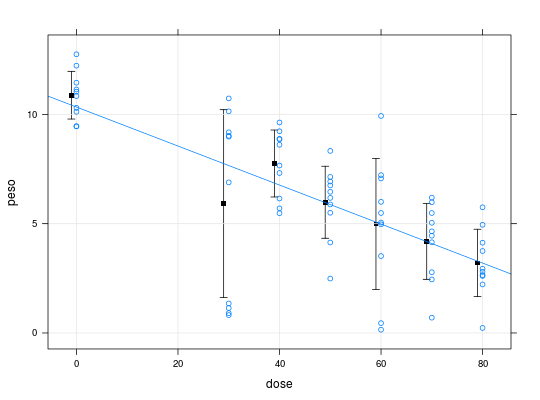

Dados provenientes de um experimento inteiramente casualizado onde expuseram explantes de abacaxis a diferentes doses de radiação gama e, 45 dias após a irradiação, mensurou-se o peso destes explantes.
Um data.frame de 70 linhas e 2 colunas, em que
doseabsorvDEMÉTRIO; ZOCCHI (2011), Tabela 2.11 pág. 66.
data(DemetrioTb2.11)#> Warning: data set ‘DemetrioTb2.11’ not foundstr(DemetrioTb2.11)#> 'data.frame': 70 obs. of 2 variables: #> $ dose: num 0 0 0 0 0 0 0 0 0 0 ... #> $ peso: num 9.45 10.84 10.12 11.14 10.3 ...library(lattice) # Estatísticas descritivas with(DemetrioTb2.11, tapply(peso, dose, summary))#> $`0` #> Min. 1st Qu. Median Mean 3rd Qu. Max. #> 9.45 10.16 10.94 10.88 11.37 12.75 #> #> $`30` #> Min. 1st Qu. Median Mean 3rd Qu. Max. #> 0.820 1.192 7.935 5.916 9.140 10.730 #> #> $`40` #> Min. 1st Qu. Median Mean 3rd Qu. Max. #> 5.480 6.443 8.135 7.752 8.875 9.630 #> #> $`50` #> Min. 1st Qu. Median Mean 3rd Qu. Max. #> 2.490 5.595 6.320 5.980 6.885 8.330 #> #> $`60` #> Min. 1st Qu. Median Mean 3rd Qu. Max. #> 0.150 3.883 5.270 4.985 6.802 9.930 #> #> $`70` #> Min. 1st Qu. Median Mean 3rd Qu. Max. #> 0.700 3.122 4.550 4.188 5.377 6.190 #> #> $`80` #> Min. 1st Qu. Median Mean 3rd Qu. Max. #> 0.230 2.620 2.870 3.203 4.035 5.750 #>with(DemetrioTb2.11, { mu <<- aggregate(peso, list(dose), mean) des <<- aggregate(peso, list(dose), sd) }) xyplot(peso ~ dose, data = DemetrioTb2.11, type = c("p", "r"), grid = TRUE, panel = function(x, y, ...) { panel.points(x = mu$G - 1, y = mu$x, pch = 15, col = 1) panel.arrows(x0 = mu$G - 1, y0 = mu$x - des$x, x1 = mu$G - 1, y1 = mu$x + des$x, code = 3, length = 0.05, angle = 90) panel.xyplot(x, y, ...) })